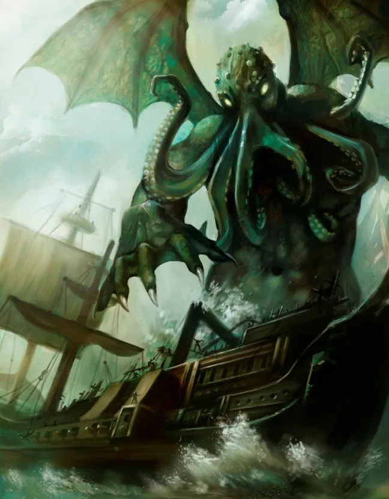
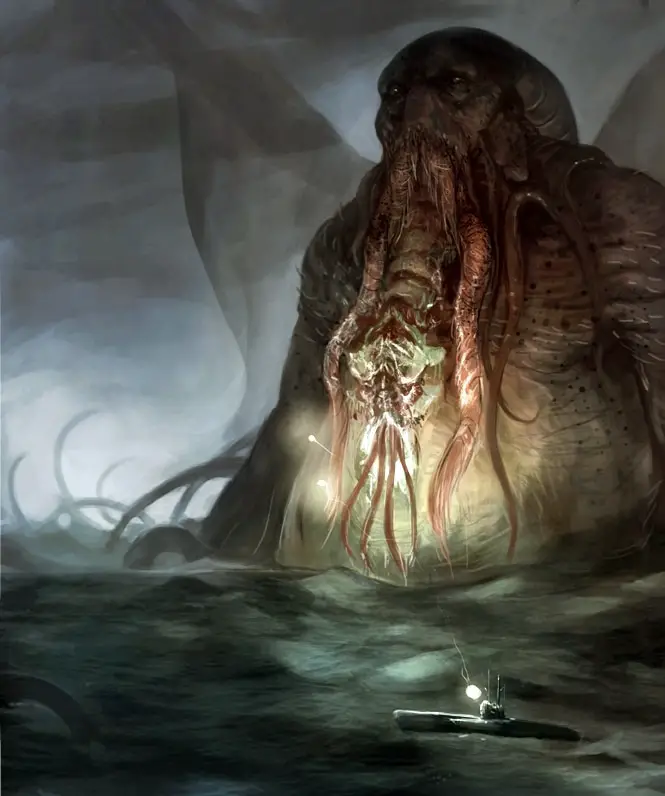
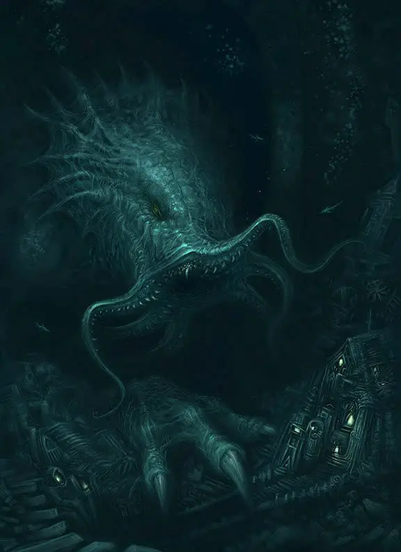

Esta es una de sus obras más famosas. En ella el protagonista, Francis Wayland Thurston, encuentra unas notas en el despacho de su tío, un profesor de lengua que falleció hace un año. En medio de las notas hay una pequeña escultura de una criatura inquietante y escamosa, con forma de pulpo, dragón.

Posteriormente descubre en las notas que esa esculutra fue hecha por un estudiante de arte de Rodhe Island mientras tenía sueños delirantes de misteriosas ciudades gigantes hechas con bloques y monolitos de tamaño natural que llegaban al cielo. Tambíen le llamo la atención unas palabras que se repetian muchas veces, Cthulhu y R’lyeh.
Posteriormente lée acerca de una reunión de 1908 de una sociedad arqueológica, donde un oficial de la policía de Nueva Orleans muestra a los asistentes una estatuilla de piedra negro verdosa con un a la escultura de estudiante. El policía revela que el año anterior, él y un grupo de oficiales encontraron a un grupo de mujeres y niños siendo utilizados en un ritual por un culto exclusivamente masculino. El policía dijó que Cinco sectarios fueron asesinados y cuarenta y siete fueron arrestados, y que todos eran adoradores de los “Grandes Antiguos”, específicamente de un ser monstruoso llamado Cthulhu, representado en la estatuilla.
Investigando más descubrió un artículo de 1925 de un periódico australiano que habla del descubrimiento de un barco naufragado, el Emma . Cuyó único sobreviviente es el segundo oficial, Gustaf Johansen. Que informa que su barco fue atacado por el Alert , un yate fuertemente armado y agresivo. Aunque los miembros de la tripulación del Emma mataron a los que estaban a bordo del Alert , su propio barco sufrió daños graves en la batalla.

Tras leer este artículo, el protagonista decide ir a investigar a Australia. Allí encontró una estatua recuperada de Alert que es similar a las otras dos.
Tras eso decide investigar sobre el marineor y lo localiza en Noruega. Viaja a Noruga y se da cuenta que el marinero había muerto, pero su viuda le dío un manosctito del marinero. El cual describe una ciudad de cadáveres llamada R’lyeh y no comprendida por la mentalidad humana. También dice que su vagabundeo confuso condujo a la liberación de Cthulhu, lo que provocó su muerte. Johansen y su compañero de tripulación sobreviviente huyeron a bordo del Alert , perseguidos por un ser maligno.
Depués Johansen se enfrento al maligni y le clavó una cosa en la cabeza de la criatura, pero rápidamente se regeneró, y su compañero de tripulación resultó fatalmente herido en el intento y Johansen tuvo que escapar a bordo del Alert . Al terminar el manuscrito, el protagonista se da cuenta de cuántas personas han muerto cuando se acercaron demasiado a la verdad y se da cuenta de que ahora se convertirá en un objetivo de los seguidores de Cthulhu.

| |
|